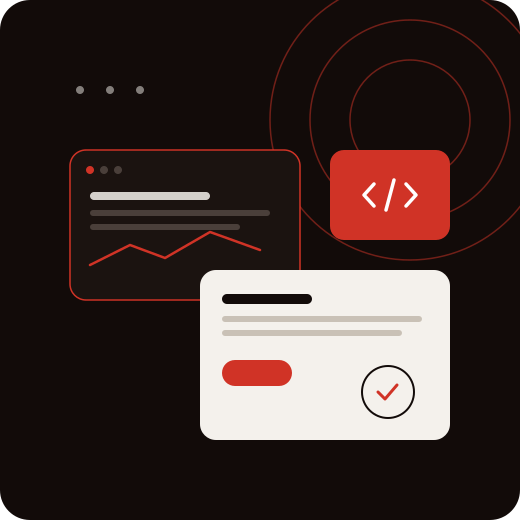

Faster Time-to-Market
Ship MVPs and releases in weeks using low-code and reusable engineering, instead of quarters of from-scratch build.
Application & Product Engineering
Scalable applications and products designed around your business, accelerated by AI, and engineered by senior people for endurance and impact.

The mindset
Anyone can ship software. Keeping yours fast, secure, and reliable under real-world pressure is engineering, and that mindset runs through everything we build for you: question the requirement, design for failure, measure what matters, own the result.
From a single application to a full product platform, we engineer custom software around your business, from mobile-first experiences and cloud-native platforms to custom-engineered products and low-code delivery, with AI in every sprint and experienced engineers on every decision that carries risk.
What sets the work apart is range with depth: full-stack engineering across mobile, web, and cloud, low-code platforms for speed where it counts, and product thinking that ties every architectural decision to a business outcome. And we don't hand it off at launch. The same team that architects and builds your product stays through release, support, and the next set of features, accountable when the business outcomes land, not when the code ships.
Challenges we solve
Five pains we get hired to end, each with an engineering path out.
One change risks regression everywhere, so releases wait on the quarter instead of the customer.
New features slip quarter after quarter while the backlog fills with fixes for yesterday.
The product slips release by release while go-to-market waits, and the window you built the business case on narrows.
The pilots demo well but die before production because the estate underneath can't carry them.
Leadership steers by last month's export while the operation moves daily.
Partner, not vendor
Most application work fails in the gaps, between strategy and build, between launch and run. The difference shows up in who owns the outcome.
Have a product to build, scale, or rescue? Pressure-test the engineering plan before you commit a line of code.
Talk to an engineering expertWhat we build
Custom enterprise applications across web, cloud, and enterprise platforms, greenfield builds or extensions of what you already run. Full-stack delivery in Java, Python, React, Angular, Node.js, PHP, Vue.js, and the MEAN stack.
End-to-end mobile: native iOS (Swift) and Android, or cross-platform with React Native, Flutter, Xamarin, Ionic, and Cordova. From consumer apps that earn their ratings to enterprise mobility that holds up in the field.
Cloud-native builds on AWS and Azure: microservices, containerization, serverless, and DevOps baked in, so your application scales on demand instead of breaking under it.
Rapid delivery on OutSystems, plus Monday.com consulting and integrations, business-led speed with enterprise governance, for the workflows and apps that shouldn't take six months to ship.
End-to-end product development for ISVs and enterprises: strategy, architecture, engineering, QA, and launch, with deep open-source stack expertise and dedicated Fintech product engineering.
SLA-backed application management that keeps the estate healthy: performance optimization, security patching, enhancements, and feature development, so your software keeps improving long after launch.
Dynamics 365, Power Platform, and the Microsoft stack, engineered into your estate rather than installed beside it.
How we work
Five stages, from pressure-testing the idea to scaling it in production.
We pressure-test the idea, define the product and architecture, and align scope to business goals, so we build the right thing before we build it right.
Our experienced engineers deliver in weeks, with AI accelerating design, code, and test, and automated testing and CI/CD compressing timelines without cutting corners.
We launch it right, with measurement already running: production hardening, performance and security validation, and a controlled release you plan rather than survive.
We measure how it performs in production, and act on what we see, before your users report it.
We sharpen it as your business moves, release after release, until the outcomes land, and beyond.
Why it matters
Ship MVPs and releases in weeks using low-code and reusable engineering, instead of quarters of from-scratch build.
Right-sized architecture, automation, and blended delivery cut both the build cost and the maintenance bill that follows it.
Cloud-native, microservices architecture absorbs growth and traffic spikes instead of buckling under them.
Mobile-first UX and performance users actually rate, so the product gets used, not just shipped.
SLA-backed support, observability, and proactive patching keep production stable and recovery quick.
A standing engineering partner means the next feature never waits on hiring, so the roadmap doesn't stall.
Ready to see how we'd approach your build? Walk through scope, architecture, and a delivery plan with our engineers.
Book a technical discovery sessionProof
A 225+ bed Ohio hospital had no real-time view of its emergency department bottlenecks, driving up boarding time and walkouts. We built a HIPAA-compliant, cloud-based real-time visibility model integrated with its EMR and CRM, tracking around 59 care and resource constraints, so leadership could act before overcrowding hit.
Read case studyA US transportation company running around 9,000 vehicles managed bookings by phone and spreadsheet, with no real-time fleet visibility. Our low-code engineers built an OutSystems platform, customer and driver apps, GPS tracking, an analytics dashboard, and multi-payment booking, shipping the first iteration in 16 weeks.
Read case studyA Cleveland software ISV needed a wayfinding product for hospitals whose static signage kept going out of date. We engineered an end-to-end, multi-platform indoor wayfinding app, blue-dot positioning, turn-by-turn routing, live route updates, and ADA compliance, across digital signage, web, and mobile.
Read case studyWhy Damco
We shape software around your processes, goals, and customers, not a template your business must bend to.
AI does repetitive work. Our engineers own architecture, judgment, and review. Intelligence is embedded in how your applications are built and how they perform, never bolted on later.
Get strategy, engineering, modernization, and continuous evolution from one accountable team, not a relay of vendors passing your product along.
Cloud, data, AI, DevSecOps, QA, and UX work as one team, full-stack across React, Angular, Node.js, Java, Python, and Swift.
We measure success by business impact, not project completion, and we stay accountable past go-live.
Our applications are designed for change, not just today's requirements, so the next feature never fights the last one.
Tech stack & platforms
Insights
FAQs
We design, build, and run enterprise applications and digital products end to end: mobile, web, cloud-native, low-code, and custom product engineering, plus ongoing maintenance and support. Whether you're launching something new, scaling an existing app, or stabilizing a struggling one, the same team owns it from architecture through production.
Both. We deliver greenfield builds from a blank page and extend, re-architect, or stabilize applications you already run. When the work touches legacy platforms specifically, our Modernization practice partners with us so the build-forward and the legacy work move together.
Low-code (OutSystems, Monday.com) is the right call when speed and business-led iteration matter and the requirements fit the platform: internal tools, workflows, and portals. Custom development wins when you need full control over performance, scale, IP, or a differentiated user experience. We help you choose deliberately, and often combine both in one estate.
Idea to launch, and beyond. We bring product strategy, UX, architecture, engineering, QA, and launch, not just developers on a backlog. If you only need to scale your existing team, our staff augmentation and dedicated-team models cover that too.
Three, depending on how much you want to own: staff augmentation to extend your team, dedicated teams that run a product or backlog, and fully managed delivery where we own scope and outcomes. All three scale up or down with your roadmap.
Yes, and it's core to how we work. SLA-backed maintenance covers performance optimization, security patching, enhancements, and feature development. We stay accountable post-launch until the product is delivering the outcomes it was built for, and through the releases after that.
Both are engineered in from the first sprint, not inspected in at the end: automated testing and CI/CD throughout, secure-SDLC practices, and architecture aligned to SOC 2, HIPAA, PCI DSS, and GDPR where your industry demands it.
Yes. We engineer products for financial services, insurance, and healthcare ISVs, with dedicated Fintech product engineering and a working grasp of the compliance, security, and reliability bar those domains require.
We design with AI in mind from the start: intelligence embedded into workflows, user experiences, and decision-making, on an architecture that can carry the AI capabilities you have not planned yet. If your current estate cannot hold AI, that is usually where the engineering conversation starts.
Start here
Walk through scope, architecture, and a delivery plan with our engineers. Worst case, you leave with a sharper second opinion. Best case, you've found the team to build it.